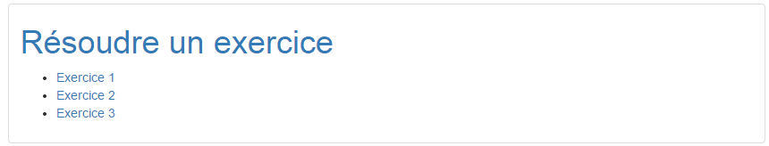

Comment, où résoudre un exercice?¶
La page de résolution d’exercice¶
L’application exercice possède un onglet Résoudre un exercice , présent sur le menu latéral permettant de renvoyer à la page de résolution d’exercice.

Cliquez sur l’onglet Résoudre un exercice pour aller sur la page de résolution. Une fois sur la page, une liste ressemblant à ça devrait apparaître:
Comme vous pouvez le constater, tous les exercices créés sont présents sur cette page. Il suffit juste de cliquer sur l’exercice dont vous avez besoin pour être redirigé vers celui-ci.
Le code permettant la résolution :¶
Les templates¶
Le template find.html¶
Le template de cette page se trouve sous le fichier exercises/templates/find.html . Dans celui-ci, il y a une chose notable qui mérite d’être expliqué c’est la récupération d’urls des exercices.
<ul>
{% for exercise in exercises_list %}
<li><a href="{% url 'exercises:resolve' exercise.id %}">{{ exercise.title }}</a></li>
{% endfor %}
</ul>
Nous verrons par la suite d’où vient la liste ” exercises_list”. Mais cette liste permet de créer une liste html avec tous les exercices présents dans la base de données et de faire un lien permettant d’accéder à leur page
Le template resolve.html¶
Le template resolve.html est le template où apparaissent tous les exercices qui ont été créés par les professeurs. Chaque exercice possède une page et pour chaque nouveau exercice, une nouvelle page est créée. Ceci permet aux exercices de ne pas dépendre les uns des autres et d’être totalement indépendants.
Nous pouvons faire resortir l’appel des éléments de chaque objet appartenant à “Exercises” en les utilisant dans de simples balises html.
<h1 id="title">{{ exercise.title }}</h1>
<div class="thumbnail">
<p id ="donnee">{{ exercise.donnee }}</p>
<p>{{ exercise.equation }}</p>
<h6>crée le :{{ exercise.created_on }}</h6>
<input type="text" id="equation" name="equation" class="form-control">
</div>
Les vues¶
La vue find¶
La vue find se trouvant dans le fichier views.py est la vue qui nous permet de récupérer tous les exercices présent dans la base de données. Cette vue est importante car sans elle, le seul moyen d’accéder aux exercices serait de connaître l’url de ceux-ci et de les écrire à la main. Tandis que là, il suffit de se rendre sur la page Résoudre un exercice pour voir tous les exercices qui ont été créés. Cela est très pratique notamment si un élève veut pouvoir s’entraîner sur plusieurs matières ou si tout simplement il a envie de faire quelques exercices de manière aléatoire.
Le code de cette vue est le suivant :
def find(request):
latest_exercise_list = Exercise.objects.all()
return render(request, 'exercises/find.html', {"exercises_list" : latest_exercise_list})
La fonction objects.all() permet de récuperer tous les exercices présents dans la table Exercises. Il suffit de faire une boucle “for” dans le template pour les afficher.
La vue resolve¶
La vue resolve se trouvant dans le fichier views.py est la vue qui nous permet d’afficher un exercice dans son template resolve.html et si il n’y a pas d’exercice suite à l’url entré par l’utilisateur, elle renvoit une erreur 404. Grâce à celle-ci, chaque exercice à sa propre page.
Le code de cette vue est assez rudimentaire mais l’import ainsi que l’utilisation de “get_object_or_404” est à noter.
from django.shortcuts import get_object_or_404
def resolve(request, n_exercise):
exercise = get_object_or_404(Exercise, id=n_exercise)
return render(request, 'exercises/resolve.html', {"exercise" : exercise})